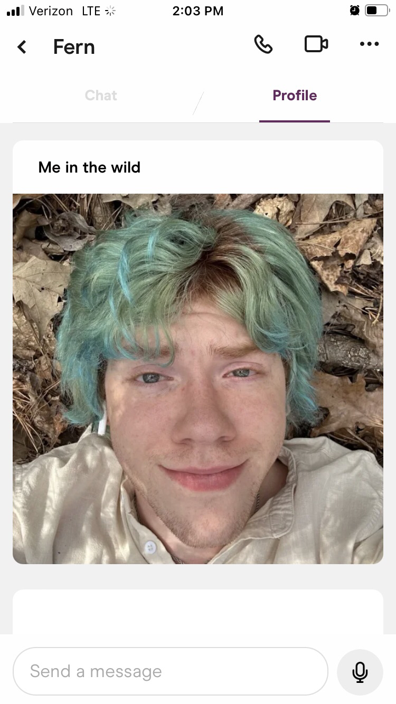

Before the beginning
Before the beginning there was nothing- I mean- obviously. Before we met we lived our own separate lives, with our own separate friends, goals, and schedules. I had just graduated from high school, reeling with what I was going to do and where I was going to go- He was home for the summer after his first year off at college. A little different, but still around the same place. Neither of us were really searching, but both of us were hoping. The plethora of dating sites on both of our phones that we barely checked, and the slim hope of meeting someone one day when we were out taunting us. Until- one night we both opened the same site.
────･ﾟ✧───❀*̥˚───━☽【❖】☾────❀*̥˚───･ﾟ✧────
The Start
It was toward the middle of May 2023 when we first started talking. One late night, May 11th I believe, I was up late lying in bed- much later than I had planned on staying up- and I got a notification from Hinge that someone had sent me a message from my profile. Being bored with nothing else to do and being interested in who had messaged me I opened the notification and that's when I first saw him.
There was something about the pictures on his profile and something about the message he sent me- just a simple first message- so I gave it a shot. Usually, people would message me, and I wouldn't see the notification till much later and that's when I would respond. I hardly ever got a response back. But this message was recent. I sent a text back and got ready to go to bed- Until I got a notification. It was a response back. A quick response back. It was this response that spiraled into conversation, into a call. Into months of devotion and dedication. It was one late night with one straight text and one quick response- that laid out the rest of our lives.
The initial start was a little rough as most Relationships that start on dating apps are. We were busy, or should I say I was busy having just graduated high school and going on a trip for my senior graduation. From his perspective, I've actually heard that there were two other people in competition with me at the time and, despite my absence for a good few weeks it was still mine that caught his attention. After I was back from my trip, I was able to dedicate more time to getting to know him and talking to him. I honestly think that's what won him over.
What Followed
Usually this is the part where they say, “and what happens next is History” and they never further elaborate, but I will further elaborate for you. After I had returned from my trip and was able to dedicate my time to something other than myself- we talked for a little while primarily over call and text for a good time until- finally- we went on our first Date. The first date that I just happened to be an hour late too. (something I still feel incredibly bad about) a first date that his friends brought him to because I. Wasn't able to drive that far yet, so we had to agree to meet in Chattanooga. A first date I don't think I'll ever really forget. We met up at Coolidge Park- He was sitting in one of the fields, close to the water wearing a floral button up shirt, a pair of shorts and signature f⋆⋆ing sandals. We walked around for hours that day, sitting on the rocks, enjoying the small breeze from the river. I got him a necklace that day, but he still wears it every day to this day. It was a great day that ended with us begging his friends for just a little more time to get to know each other in the front seat of my car.

After that first date, our relationship really took off- though we weren't technically together yet, at least not under a label. That was saved for a little bit later, after about a month after we had first started talking. It's my first time driving somewhere other than within the Chattanooga area. I took my best friend and him to the Rome Pride Festival. It was there that I met his friends and had one of the best days of my life, quite honestly. Afterward, we stopped by a place we called the Rock Garden near where he lives, which is where the image above -at the beginning of this section- was taken. It was that night, June 24th, after postponing my departure for far too many, “just another half an hour”s that's when we solidified that this- that we- were real.

I spent most of that summer living between Chattanooga and Calhoun- Visiting for any period of time that I could When I had off work, as well as taking him for the occasional stray days to stay with me. I made some of the best memories I've ever made that summer, and it's probably the best summer I've had to date. I grew a lot in that summer, too- As a person and as a partner, and what came from a stray text on a summer night became hope for the future, In a newfound life.
But, like they say, all good things must come to an end. To some degree- Just like the seasons we had to move, and at the end of summer we parted as he went back to school. But we continued- and we still do. We continue to grow apart, and we continue to grow-